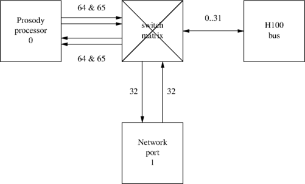
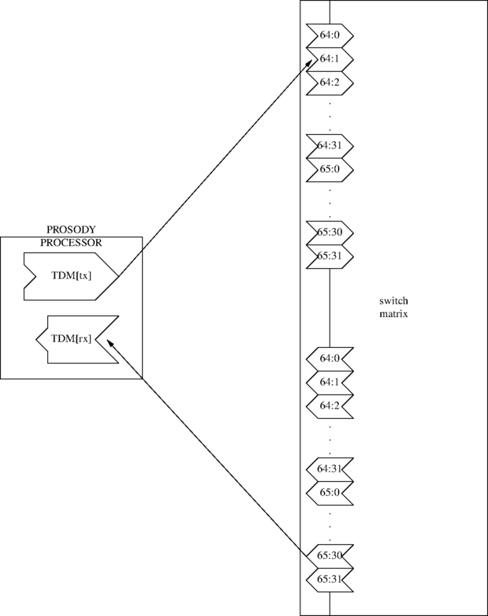
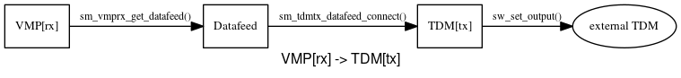
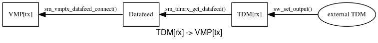

There is a need to transfer data between various end-points within a single Prosody media processor. A datafeed is an object which represents the flow of data between two such end-points. There are two broad classifications for end-points in the Prosody API, data sources and data sinks. A datafeed is obtained from a data source end-point using the "get" API call, and the data source writes data into the datafeed. Zero or more data sink end-points may be connected to a datafeed and, once connected, are able to read data that was placed there by the data source. To connect a data sink end-point to a datafeed there is a "connect" API call. Datafeed connections can only be made between objects allocated on the same tSMModuleId.
NOTE: The current implementation does not support the connection of a datafeed from a TDM[rx] to a TDM[tx]. In order to connect two TDM timeslots, it is necessary to use the switch driver API. Additionally, if a datafeed is connected to more than one TDM[tx] simultaneously the data is only output to the last TDM[tx] to be connected.
TDM data is passed between a Prosody processor and the outside world through switch connections. Switch connections are controlled by the Aculab switch driver. The switch driver controls a switch matrix, to which various devices are connected:

This shows a portion of the switching on a Prosody X PCI card. The switch matrix is connected to the external H.100 bus and to Aculab devices on the card. Here is a more detailed view of the way that Prosody connects to the switch matrix:

This shows an example of a TDM[tx] which has its output going to a
timeslot on the switch matrix labelled 64:1 and a TDM[rx]
which has its input coming from a timeslot on the switch matrix labelled
65:30. However you can see that there
are two timeslots labelled 64:1 and two labelled
65:30. It is important not to confuse them as they are
different and, as far as Prosody is concerned, totally unrelated. When
you use
sm_tdmtx_create()
you specify a timeslot from a TDM[tx]
to the switch matrix. To connect this through
the switch matrix using the switch API function
sw_set_output() you need to specify the parameters:
p.ist = 64; p.its = 1; p.mode = CONNECT_MODE; p.ost = destination_stream; p.ots = destination_timeslot;
Similarly, the stream and timeslot you specify when creating a TDM[rx]
with
sm_tdmrx_create()
should be put in the ost and ots field of
the parameter structure passed to sw_set_output().
For example, if you want to connect the above TDM[rx] so that it can receives the output from the above TDM[tx], you would use:
OUTPUT_PARMS p; INIT_ACU_STRUCT(&p); p.ist = 64; p.its = 1; p.mode = CONNECT_MODE; p.ost = 65; p.ots = 30; err = sw_set_output(swdrvr, &p); if (err) ... // handle error
Note that unlike the pair of input stream and output stream timeslots associated
with a timeslot designation 64:2, a timeslot on an H.100 bus stream
refers to the same physical timeslot irrespective of whether it is referenced as
an input or an output to a connection. Care must be taken so that no more than
one card outputs to a particular H.100 timeslot at once otherwise data corruption
and garbled signals will occur.
See the documentation for the switch driver for more details about switching, including the streams available on each Aculab card.
There are many ways to arrange timeslot usage. Generally it is a very good idea to use as simple an arrangement as the application architecture allows. For example, if you expect to use Prosody X PCI cards with four trunks per card and two Prosody processors, then a very common arrangement is:
| Prosody | Line interface | ||
|---|---|---|---|
| Processor | stream | Port Number | stream |
| 0 | 64 | 0 | 32 |
| 65 | 1 | 33 | |
| 1 | 66 | 2 | 34 |
| 67 | 3 | 35 | |
This type of fixed arrangement is very useful when debugging because it is not necessary to study detailed log files to determine how the data is routed through a system. It also avoids confusion when using the features, such as echo cancellation and conferencing, which use more than one input and output timeslot.
With one minor exception, Prosody imposes no restrictions on which timeslots can be used for which operations. The exception is that you cannot have both A-law and mu-law timeslots on a single stream. This does not mean that you cannot play A-law and mu-law encoded files simultaneously - it means that the encoding on the timeslots (i.e. as passed through the switch matrix to the outside world) must not be different. This situation is very unusual since only international gateways normally have to deal with both A-law and mu-law trunks.
In order to play a prompt you need to configure an output channel and start a replay job, see Prosody Guide - how to play data for examples of how to do this. The data from the replay will be written to the datafeed that belongs to the output channel. To gain access to the replay data you must call sm_channel_get_datafeed(). A VoIP call streams RTP data over an IP network and, in the Prosody API, this task is managed by a VMP[tx]. You can connect the VMP[tx] to the output channel's datafeed by calling sm_vmptx_datafeed_connect(). In this configuration, data from the replay will be read from the datafeed by the VMP[tx] and sent as RTP packets over the IP network.
An incoming signal can be read from the TDM using a TDM[rx] object, see sm_tdmrx_create(). To obtain the datafeed belonging to a TDM[rx] you must call sm_tdmrx_get_datafeed(). You require an appropriately configured input channel to record the data from the TDM[rx]'s datafeed, see Prosody guide - How to record data for how to set up a record job. Once the input channel is connected to the datafeed using sm_channel_datafeed_connect() all data arriving on the TDM timeslot will be recorded by the input channel.
In a VoIP -> TDM gateway, audio data from a VMP[rx] needs to reach a TDM timeslot so that it can be switched to a call, see the switch and call API guides. In order to provide two-way audio, the incoming audio from a call must be switched to a TDM timeslot so that it can be passed to a VMP[tx].
A very simple gateway, one that requires no additional signal processing, could be set up as follows:


In systems that only use the TDM as a source and destination for audio data, the legacy switching API calls (sm_switch_channel_input() and sm_switch_channel_output()) may be used. Please note that in a mixed TDM / RTP system it is strongly recommended that the legacy switching API calls are not used.